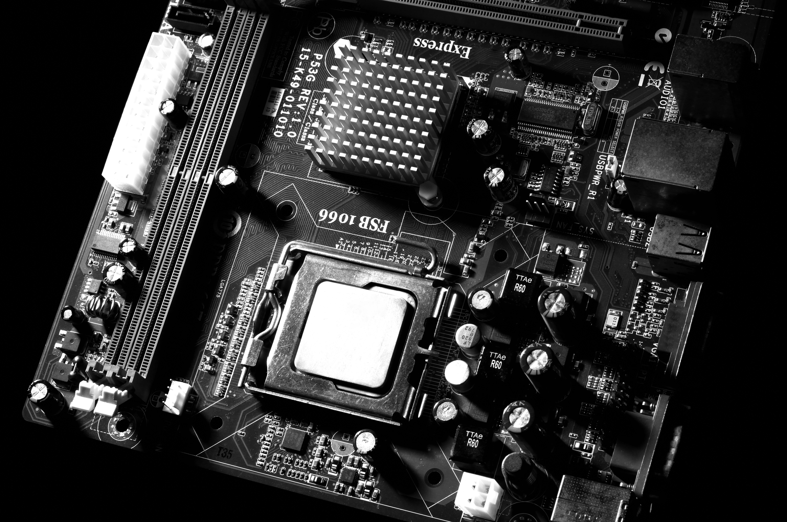
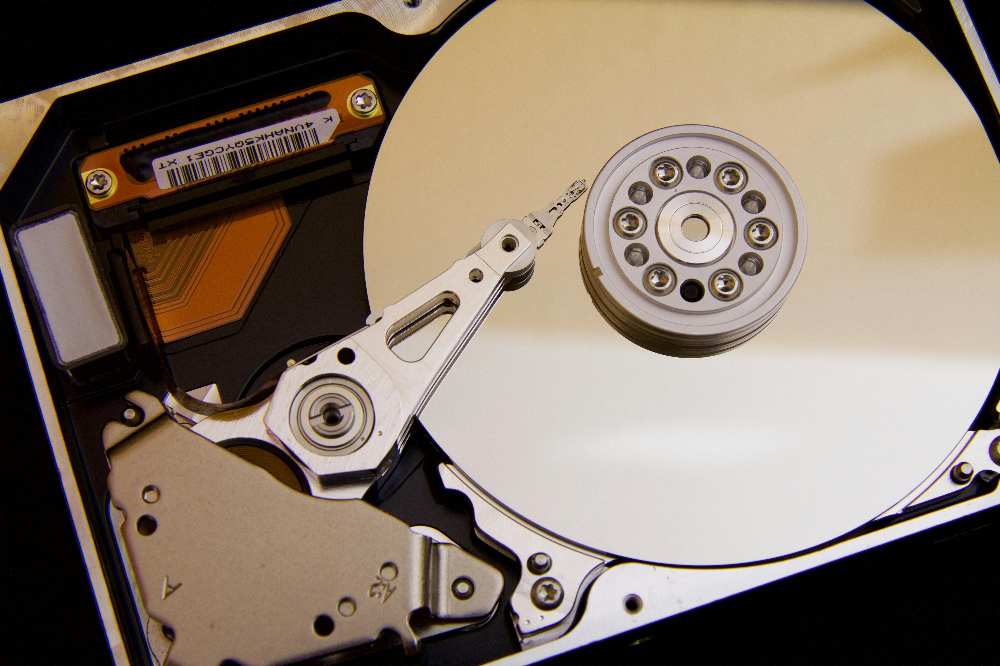
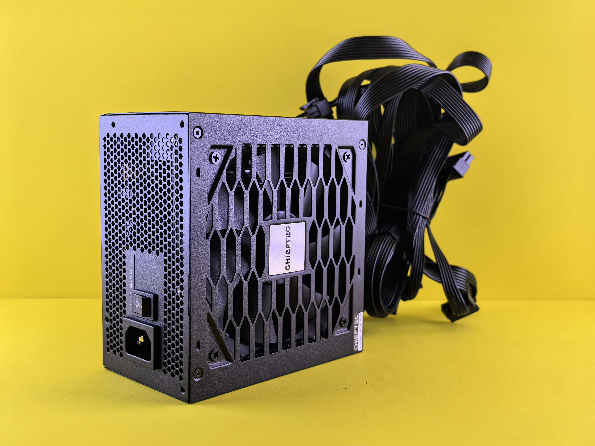

The processor is the brain of the computer. As such, it performs the necessary calculations for the computer to stay running.
It processes all of the tasks, from the most basic ones, to the really complex. The processor executes the instructions, which are stored in the memory (RAM).
It then sends the processed information to other components.
It is able to retrieve these instructions and send information to other components through the motherboard, since they are all interconnected by it.
Importance: The CPU significantly impacts your computer's performance, affecting everything from gaming to productivity applications. A faster CPU can process more tasks simultaneously, resulting in a smoother experience.
What to Look For:
When choosing a CPU, consider the number of cores and threads, clock speed (measured in GHz), and compatibility with your motherboard. More cores allow for better multitasking, while higher clock speeds improve performance in single-threaded applications. Additionally, look for CPUs with integrated graphics if you don't plan to use a separate GPU.
Graphics Processing Unit (GPU)
A computer graphical processor (GPU).
The Graphics Processing Unit (GPU) is sort of like the CPU, except it is specialized in high quality graphical processing (rendering images, video and animations).
That way, the CPU’s burden is lightened. Also, a GPU is crucial if you plan on doing anything that requires a high quality video output, so like gaming and video editing.
Importance: A dedicated GPU enhances gaming performance, improves visual quality, and accelerates tasks such as video editing and 3D rendering. For gaming, a powerful GPU is crucial to achieving high frame rates and better resolutions.
What to Look For:
When selecting a GPU, consider the memory (VRAM), architecture, and performance benchmarks. VRAM is essential for handling high-resolution textures in games, while the architecture affects performance efficiency. Look for GPUs that meet your gaming or creative needs, and ensure compatibility with your system.
Random Access Memory (RAM)
Random Access Memory (RAM).
The RAM can be thought of like the short term memory of the computer. For example, when you open an application (like Figma),
the data of the app will actively be stored in the RAM, so it can be used at random times by the processor(CPU) to well, process information, to then send somewhere else.
Once you close the app, all of the corresponding date will be erased from the RAM.
Importance: The amount of RAM you have influences how many applications you can run simultaneously and affects overall system responsiveness. Insufficient RAM can lead to slow performance and application crashes.
What to Look For:
When choosing RAM, consider the capacity (measured in GB) and speed (measured in MT/s(Megatransfers per second)). For gaming and multitasking, 16GB is generally recommended, while speed can enhance performance. Ensure compatibility with your motherboard and look for options with low latency for improved performance.
Motherboard

The Motherboard.
The motherboard connects all of the components, sort of like the command center of the computer, also allowing all of the components to communicate with each other.
It is able to do that because every component is connected to the motherboard one way or another. Albeit by cable or on the motherboard itself.
Importance: The motherboard determines the compatibility of components and features available in your build, including the number of expansion slots and connectivity options. A good motherboard is crucial for system stability and performance.
What to Look For:
When selecting a motherboard, consider the chipset, form factor, and features. Ensure it supports your CPU and RAM specifications, and look for features such as M.2 slots for SSDs, USB ports, and PCIe slots for future upgrades.
Storage Devices

The Hard Disk Drive (HDD). The slower drive of the 2.
There are 2 main types of storage device types. The Solid State Drive(SSD) And the Hard Disk Drive(HDD).
Both drives hold all of your files, programs, pictures and videos and even the operating system(Windows, MacOS, Linux). Both drives hold the same type of storage, the difference between the two is how they store it.
The HDD stores data on a spinning disk with read and write heads, while the SSD stores data magnetically. Because of this, the SSD is way faster than the HDD, and lasts longer, because of no moving parts.
This is why it is always recommended to put your operating system on your SSD.
Importance: The type and speed of storage impact boot times, application loading, and file transfer speeds. An SSD can dramatically improve system responsiveness compared to traditional HDDs.
What to Look For:
When choosing storage, consider the capacity, speed (measured in MB/s), and whether you want SSD or HDD. For optimal performance, a combination of both is often recommended: an SSD for the operating system and frequently used applications, and an HDD for additional storage.
Power Supply Unit (PSU)

The Power Supply Unit (PSU).
The PSU converts electricity from your wall outlet into usable power for your computer.
It supplies power to all components, ensuring stable operation.
Importance: A high-quality PSU is essential for system stability and longevity. Insufficient or unreliable power can lead to hardware failures and reduced performance.
What to Look For:
When selecting a PSU, consider the wattage, efficiency rating (80 Plus certification), and modularity. Ensure the wattage meets or exceeds your system's power requirements, and opt for a PSU with a high efficiency rating to save on energy costs.